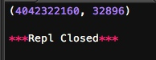

准确地讲，Python没有专门处理字节的数据类型。但由于str既是字符串，又可以表示字节，所以，字节数组＝str。而在C语言中，我们可以很方便地用struct、union来处理字节，以及字节和int，float的转换。
在Python中，比方说要把一个32位无符号整数变成字节，也就是4个长度的str，你得配合位运算符来完成.非常麻烦不利于效率开发.
好在Python提供了一个struct模块来解决str和其他二进制数据类型的转换。
struct的pack函数把任意数据类型变成字符串：
>>> import struct
>>> struct.pack('>I',10240099)
'\x00\x9c@c'
>>>
pack的第一个参数是处理指令，'>I'的意思是：
>表示字节顺序是big-endian，也就是网络序，I表示4字节无符号整数。
后面的参数个数要和处理指令一致。
unpack把str变成相应的数据类型：
#-*- coding: utf-8 -*-
import struct
print struct.unpack('>IH','\xf0\xf0\xf0\xf0\x80\x80')

根据>IH的说明，后面的str依次变为I：4字节无符号整数和H：2字节无符号整数。
所以，尽管Python不适合编写底层操作字节流的代码，但在对性能要求不高的地方，利用struct就方便多了。
struct模块定义的数据类型可以参考Python官方文档：https://docs.python.org/2/library/struct.html#format-characters